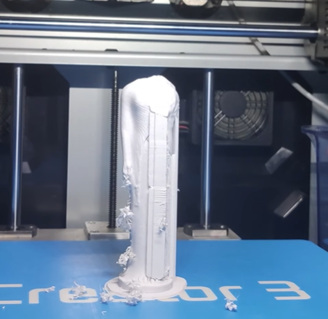
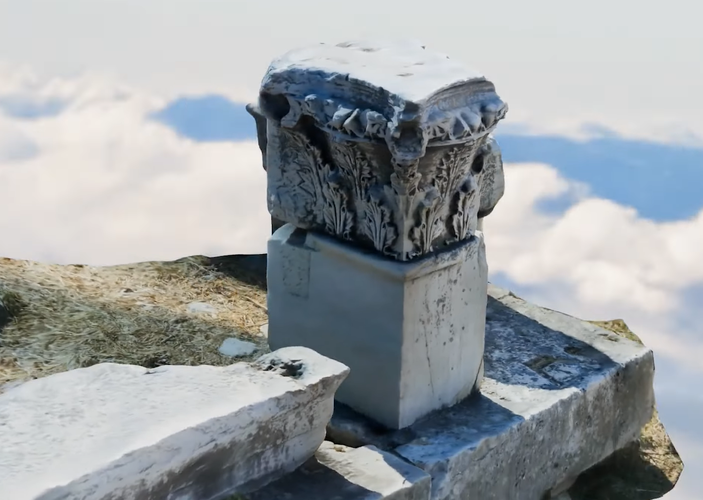

Overview
Archeo3D creates tactile 3D replicas of archaeological artifacts using photogrammetry and 3D scanning, enabling people with visual impairments to experience cultural heritage through touch. The project bridges technology and accessibility by making museum artifacts tangible.
Process
- 3D Scanning & Photogrammetry: Captured high-fidelity digital models of archaeological artifacts from Samos, including ancient columns, sculptures, and architectural elements.
- 3D Printing: Produced accurate tactile replicas using FFF 3D printing, preserving surface detail and proportions for meaningful haptic exploration.
- Accessibility Design: Optimized models for tactile interaction, ensuring features are distinguishable by touch while remaining durable for repeated handling.
Awards
- 1st Place, Inventive Students 2024 — National STEM Competition, University of Macedonia, Thessaloniki